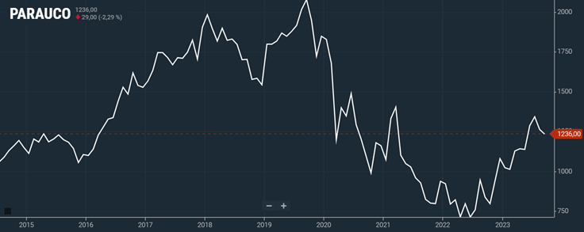

Hito 1
José Tomás Sain
Definición
Parque Arauco es una destacada empresa chilena dedicada al rubro inmobiliario. La principal actividad de esta empresa es el dominio de centros comerciales principalmente en Chile, y también se encuentran activos en Colombia y Perú. La empresa es propietaria de catorce centros comerciales en Chile, de los cuales hay siete en Santiago, uno en la región de Antofagasta, uno en la región de Coquimbo, dos en la región de Valparaíso, uno en la región de Ñuble, dos en la región del Biobío. Algunos de los centros comerciales de más importancia se encuentran en la ciudad de Santiago, los cuales son, Mall Parque Arauco, el cuál fue el primero en construirse y el principal centro comercial de la marca, seguido del Mall Arauco Maipú, Mall Arauco Estación, Mall Arauco Quilicura y Mall Arauco el Bosque. Además de esto, cuentan con diecinueve centros comerciales en Perú y con cinco en Colombia (Arauco 2023). El principal medio de obtención de utilidades de esta empresa es el arriendo de locales en la gran cantidad de tiendas que tienen en cada uno de sus centros comerciales. En el último tiempo, la marca decidió ampliar su línea de negocio adentrándose en el negocio de los edificios multifamily, los cuáles son edificios residenciales que están destinado solo al arriendo de los departamentos, y que pertenecen a un solo dueño. La empresa ha comenzado a comprar edificios en las distintas modalidades posibles para hacer esto, las cuales son realizar la compra cuando el edificio aún esta en la fase de proyecto, cuando el edificio está terminado, pero aún no esta con gente, es decir, todavía no hay arrendatarios, y finalmente, comprar el edificio una vez que ya esta funcionando con arrendatarios activos (Diario Estrategia 2023). Hasta la fecha la empresa cuenta con dos edificios multifamily en Chile, ambos operando, y adquirieron dos edificios más, uno en Perú y otro en Colombia, ambos en proceso para comenzar a operar en el corto plazo. Además de estos cuatro edificios, Parque Arauco tiene planes de seguir ampliando su negocio en el rubro de los edificios multifamily, tanto en Chile como en Perú y Colombia. Hoy en día, la empresa cuenta con más de un millón de metros cuadrados de superficie a nivel consolidado.
Motivación
Se ha decidido elegir esta empresa ya que en primer lugar es una de las empresas más grandes de Chile, y que como se mencionó en el punto de definición, están activos en impulsar el crecimiento del rubro de los edificios multifamily en el país. Esto último es positivo debido a que este concepto es una buena alternativa en estos momentos para que la gente pueda conseguir una vivienda, debido a las altas tasas actuales de créditos hipotecarios que hacen cada vez más dificil la posibilidad de conseguir una vivienda propia para las personas. Por esto este concepto de vivienda es una muy buena alternativa de inversión, debido a la gran demanda de arriendos que se genera por las altas tasas hipotecarias. Parque Arauco esta diversificando su modelo de negocio, no solamente quedándose en el rubro de los centros comerciales, del cuál ya son lideres en el país, sino que también están impulsando otros modelos de negocio que son bastante interesantes para el desarrollo del país.
Contexto
Esta empresa esta sujeta en gran medida al contexto económico del país en determinado momento, ya que, acotando solo al rubro de centros comerciales, el éxito del negocio depende bastante en la situación económica en la que se encuentra el país y por lo tanto las personas. Por lo tanto, la empresa está sujeta a la comodidad en la que se encuentran las personas para permitirse comprar en las tiendas de dichos centros comerciales. Si el país esta pasando por una mala situación, y hay altos índices de inflación, las personas tenderán a reducir la frecuencia con las que van a comprar a los centros comerciales, ya que empieza una necesidad colectiva de cuidar el dinero y destinarlo principalmente a solo cosas esenciales. Si esto sucede, las tiendas al dejar de tener los ingresos necesarios para sustentar tener un local en un centro comercial de Parque Arauco, que son un importante costo para las tiendas. Si las tiendas dejan de tener el sustento para permitirse mantener el arriendo en el centro comercial, terminarán por dejar de arrendar, cosa que finalmente terminaría perjudicando a Parque Arauco ya que de esta manera logran sus ingresos.

(Bolsa de Santiago, 2023)
En este gráfico se puede ver como las acciones de Parque Arauco disminuyeron significativamente desde el año 2020, y recien en el 2023 empiezan a recuperarse. Se logra visualizar claramente cómo las acciones de la empresa estuvieron en su peor momento desde el año 2015 para un momento en el que hubo dificultad económica debido a la pandemia del COVID-19 y a la guerra entre Ucrania y Rusia que ha causado inflación a nivel mundial durante los últimos años. Por lo tanto, se puede ver que cuando las personas tienen dificultades económicas la empresa se ve muy perjudicada.
Ahora, acotando al nuevo modelo de negocio que esta implementando Parque Arauco con los multifamily, tambien están sujetos a la situación económica a nivel país en determinado momento, ya que si por distintos motivos las tasas que ofrecen los bancos para créditos hipotecarios destinados a que la gente pueda comprar propiedades están altas, se verá favorecida la demanda de arriendo por parte de las personas, y de esta manera podrían conseguir inquilinos con una buena rotación de manera más fácil.
Otra variable para considerar es el estado en el que se encuentra el rubro de la construcción en el país que se quieren realizar las actividades, ya que esta empresa depende mucho de este. Si bien el desempeño del rubro de la construcción está muy relacionado con la situación económica general del país, sirve para reafirmar lo planteado, ya que en momentos como los actuales que existe una crisis en el área de la construcción, se dificulta la elaboración de proyectos nuevos para edificios multifamily que podrían ser de interés de la empresa en un futuro, y también dificulta la opción de ampliar su despliegue de centros comerciales, haciendo más restrictiva la opción de construcción de centros comerciales en nuevos lugares.
Análisis de Largo Plazo
Caracterización deuda
Las acciones comunes de Parque Arauco se cotizan en la Bolsa de Santiago bajo el nombre de PARAUCO, dichas acciones a la fecha 28/09/2023 tienen un valor de $1.235. El número de accionistas de la empresa es de 405, y los principales son Inversiones CABILDO SA con una participación de 17,11%, SANTANDER CORREDORES DE BOLSA LIMITADA con un 6,2%, LARRAIN VIAL SA CORREDORA DE BOLSA con un 5,17%, BANCO DE CHILE POR CUENTA DE STATE STREE con un 5,15%, e INVERSIONES JARDINES DEL BOSQUE LIMITADA con un 4,71%. El número de acciones suscritas con pago realizado a la fecha son 905.715.882 (Bolsa de Santiago 2023). En cuanto a acciones preferentes, Parque Arauco no es ampliamente conocido por emitir este tipo de acciones.
La empresa recientemente en marzo de 2023 emitió su primera colocación desde el año 2020 debido a la pandemia del COVID-19, con un bono por UF 3 millones. Esta colocación tiene el objetivo de refinanciar los pasivos de la empresa. Esta emisión de bonos tiene una tasa de interés de un 3,15% anual y representa un 8,5% de la deuda total de la empresa (Diario Financiero 2023).
En cuánto a lo que se espera de la empresa para el futuro, se obtuvieron los siguientes datos de una estimación de crecimiento:
| Trimestre actual | 62,20% |
| Próximo trimestre | -53,10% |
| Año actual | -15,60% |
| Próximo año | 5,40% |
| Próximos 5 años (por año) | 7,60% |
(Yahoo Finance 2023)
Caracterización de emisiones históricas
La emisión de acciones de la empresa Parque Arauco se caracteriza por emitir acciones comunes, en las que el mayor porcentaje de ellas lo tienen grandes empresas. La empresa se conoce por tener una estrategia financiera conservadora. La colocación en este caso sería del tipo Oferta Pública Nacional (OPN), en la cuál se realiza la emisión de acciones y bonos para inversionistas dentro del país.
En la siguiente tabla se muestra algunos datos sobre el rendimiento de las acciones de Parque Arauco en los últimos años:
| Divisa: CLP | 2018 | 2019 | 2020 | 2021 | 2022 |
| Dividendos por acción (FY) | 39 | 25 | 0 | 20 | 25 |
| Rentabilidad por dividendo (FY) % | 2,52 | 1,35 | 0 | 2,13 | 2,31 |
| Ratio de reparto de dividendos (FY) % | 29,78 | 24,2 | 0 | 77,28 | 22,41 |
(Trading View 2023)
Relación con activos derivados
Algunos de los activos derivados de Parque Arauco, entendiendo esto como activos que pueden afectar directamente al valor del activo de Parque Arauco, podrían ser las tiendas más grandes que se encuentran en general en gran parte de sus centros comerciales. Un ejemplo de esto podrían ser los cines de la marca Cinépolis o las tres principales tiendas de retail, que serían Falabella, Ripley y París, las cuales sin duda le proporcionan gran cantidad del público que reciben los centros comerciales en el día a día.
Dicho esto, se podría decir que Parque Arauco en cada uno de sus centros comerciales está sujeto al desempeño que están teniendo dichas empresas, ya que si estas empiezan a perder clientes también significa que habrá menos público ya que este tipo de tiendas grandes por lo general siempre se encuentran dentro de centros comerciales.
Luego, si se analiza más a nivel micro, viendo la situación por cada centro comercial, se puede entrar a ver distintos ejemplos como lo podría ser algún restaurant de alta concurrencia que tenga dicho centro comercial, o otra tienda de gran escala como lo podría ser Ikea en el Mall Parque Arauco de Las Condes. Es por esto que en el caso de las tiendas de retail esto se puede generalizar para todos los centros comerciales, ya que suelen encontrarse en todos, entonces el desempeño (positivo o negativo) de alguna de estas puede afectar de gran manera a la empresa.
Reporte grupal
El porcentaje del portafolio entregado para cada activo se muestra en la siguiente tabla:
| Activo | Porcentaje Portafolio |
|---|---|
| Banco de Chile | 30% |
| Enel | 50% |
| Parque Arauco | 20% |
Se decidieron estos porcentajes basándose en la estimación de crecimiento a un año de cada uno de los activos proporcionada por Yahoo Finance, las cuales son las siguientes:
- Banco de Chile: 7,3% (Yahoo Finance 2023)
- Enel: 65,8% (Yahoo Finance 2023)
- Parque Arauco: 5,4% (Yahoo Finance 2023)
Se determinó que Enel Chile tendrá un 50% de peso en el portafolio debido al pronóstico de crecimiento que tendrá en el próximo año (65.80%). Además, en los últimos 2 años ha obtenido un retorno promedio de 37.5%, mayor que los activos elegidos en las otras industrias. Otro aspecto que nos hizo elegir un peso mayor que las otras compañías es su compromiso con el medio ambiente, aspecto que cada vez es más valorado. Por otro lado, la empresa ha invertido fuertemente en nuevos proyectos que probablemente demuestren mayores retornos en el futuro.
Por otro lado, al Banco de Chile se le asignó un 30% de peso en el portafolio debido a su liderazgo en la industria bancaria en términos de rentabilidad y ha jugado un papel sumamente importante a lo largo de los años en la industria financiera. Junto a esto, la proyección del banco en términos de crecimiento para los próximos años, es positiva y cercana a un 11.8%.
Finalmente, a Parque Arauco se le otorgó un 20% del portafolio debido a la diversificación del modelo de negocios que han implementado en los últimos años. El ingreso al negocio de los edificios multifamily podría ser una razón de gran crecimiento para la empresa en el futuro, debido a que actualmente ya operan dos edificios en Santiago, tienen proyectos que estarán operando en el corto plazo en Perú y Colombia, y tienen planes de seguir ampliando esta cantidad. Considerando la gran demanda de arriendo que existe hoy en día, la empresa podría verse muy beneficiada con la implementación de este nuevo negocio.
Referencias
- Arauco, P., (2023). Portafolio - Parque Arauco Corporativo [en línea]. Parque Arauco Corporativo. [Consultado el 28 de septiembre de 2023]. Disponible en: https://www.parauco.com/parque-arauco-corporativo/portafolio/chile
- Bolsa de Santiago, (2023). SANTIAGOX [en línea]. ShieldSquare Captcha. [Consultado el 28 de septiembre de 2023]. Disponible en: https://www.bolsadesantiago.com/resumen_instrumento/PARAUCO
- Diario Estrategia, (2023). Parque Arauco anuncia su sexto proyecto de multifamily, y su segunda adquisición en Chile [en línea]. Diario Estrategia. [Consultado el 28 de septiembre de 2023]. Disponible en: https://www.diarioestrategia.cl/texto-diario/mostrar/4147148/parque-arauco-anuncia-sexto-proyecto-multifamily-segunda-adquisicion-chile
- Diario Financiero, (2023). Parque Arauco emite bono por UF 3 millones en su primera colocación desde 2020 | Diario Financiero [en línea]. Noticias de negocios, financieras y económicas de Chile y el mundo | Diario Financiero. [Consultado el 28 de septiembre de 2023]. Disponible en: https://www.df.cl/mercados/renta-fija/parque-arauco-emite-bono-por-uf-3-millones-en-su-primera-colocacion
- Trading View, (2023). Dividendos de PARQUE ARAUCO SA – BCS:PARAUCO – TradingView [en línea]. TradingView. [Consultado el 28 de septiembre de 2023]. Disponible en: https://es.tradingview.com/symbols/BCS-PARAUCO/financials-dividends/?selected=dividends_yield
- Yahoo Finance, (2023). Clasificaciones, estimaciones y pronósticos de analistas de Parque Arauco S.A. (PARAUCO.SN) - Yahoo Finanzas [en línea]. Yahoo Finanzas - Mercado de valores en vivo, cotizaciones, negocios y noticias financieras. [Consultado el 28 de septiembre de 2023]. Disponible en: https://es-us.finanzas.yahoo.com/quote/PARAUCO.SN/analysis?p=PARAUCO.SN
- Yahoo Finance, (2023a). Clasificaciones, estimaciones y pronósticos de analistas de Enel Chile S.A. (ENELCHILE.SN) - Yahoo Finanzas [en línea]. Yahoo Finanzas - Mercado de valores en vivo, cotizaciones, negocios y noticias financieras. [Consultado el 28 de septiembre de 2023]. Disponible en: https://es-us.finanzas.yahoo.com/quote/ENELCHILE.SN/analysis?p=ENELCHILE.SN
- Yahoo Finance, (2023a). Clasificaciones, estimaciones y pronósticos de analistas de Banco de Chile (CHILE.SN) - Yahoo Finanzas [en línea]. Yahoo Finanzas - Mercado de valores en vivo, cotizaciones, negocios y noticias financieras. [Consultado el 28 de septiembre de 2023]. Disponible en: https://es-us.finanzas.yahoo.com/quote/CHILE.SN/analysis?p=CHILE.SN